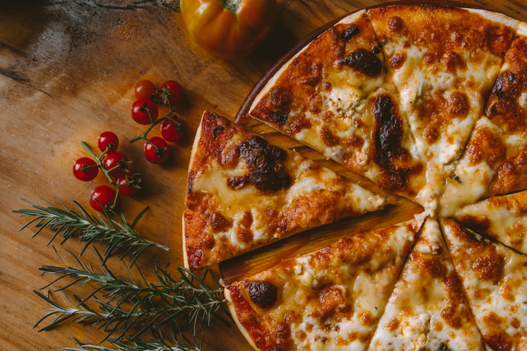
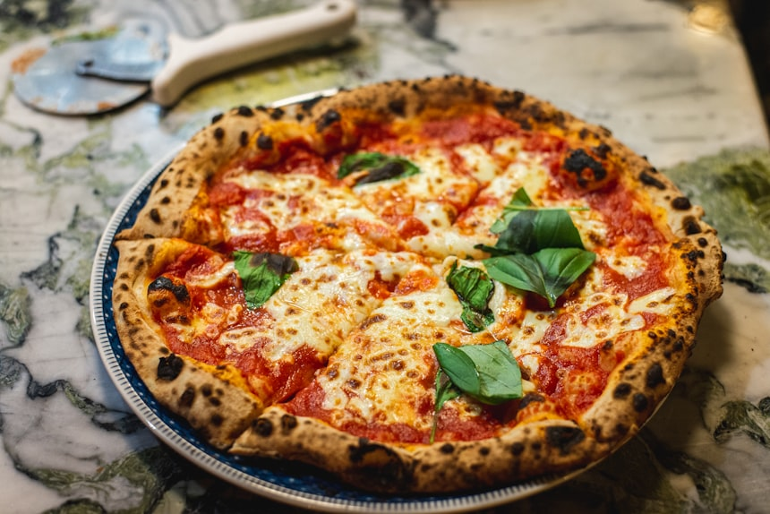

My Favorite Food: Pizza
A slice of happiness in every bite.

Pizza is one of the most beloved foods on the planet, enjoyed by billions of people across every culture and continent. Its magic lies in its simplicity — a crispy crust, a rich tomato base, melted cheese, and an endless array of toppings that can be mixed and matched to suit any palate.
Whether it is a thin Neapolitan slice fresh from a wood-fired oven in Naples or a thick, loaded deep-dish from Chicago, every style of pizza tells a different story.
My Favourite Toppings
- Extra mozzarella cheese
- Spicy pepperoni
- Roasted red peppers
- Caramelised onions
- Fresh basil leaves
- A drizzle of truffle oil

How to Make a Classic Margherita Pizza
- Mix flour, yeast, salt, and warm water to form a smooth dough
- Knead for 10 minutes, then let it rise for at least 1 hour
- Roll the dough into a round base, about 30 cm wide
- Spread crushed San Marzano tomatoes evenly over the base
- Tear fresh mozzarella and scatter over the sauce
- Bake at the highest oven temperature for 8–10 minutes
- Top with fresh basil and a drizzle of olive oil before serving
Fun Fact: Approximately 5 billion pizzas are sold worldwide every year — that is roughly 650 million kilograms of cheese!
Explore Pizza Further
- The Pizza Lab – Serious Eats – Deep-dive science and technique behind perfect pizza
- Pizza Makers Forum – Community of home and professional pizza makers
- Pizza – Wikipedia – History and varieties of pizza around the world